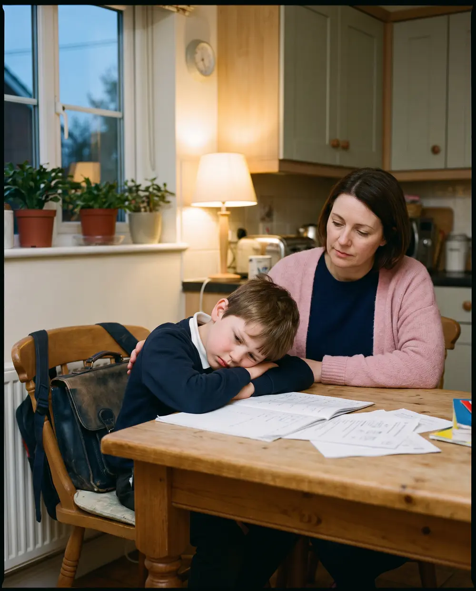
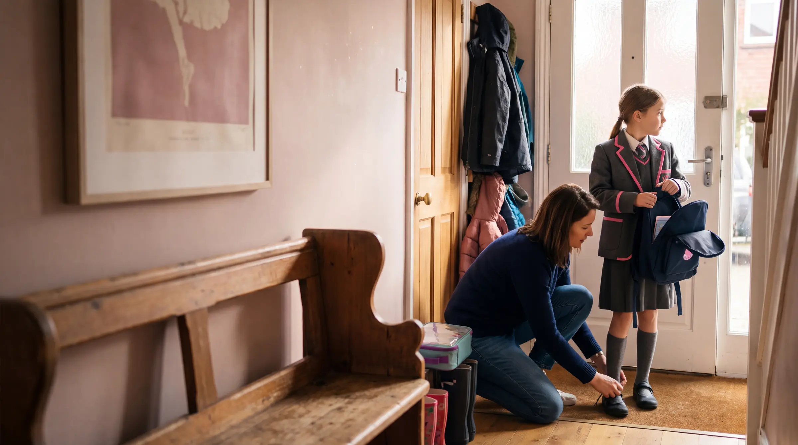
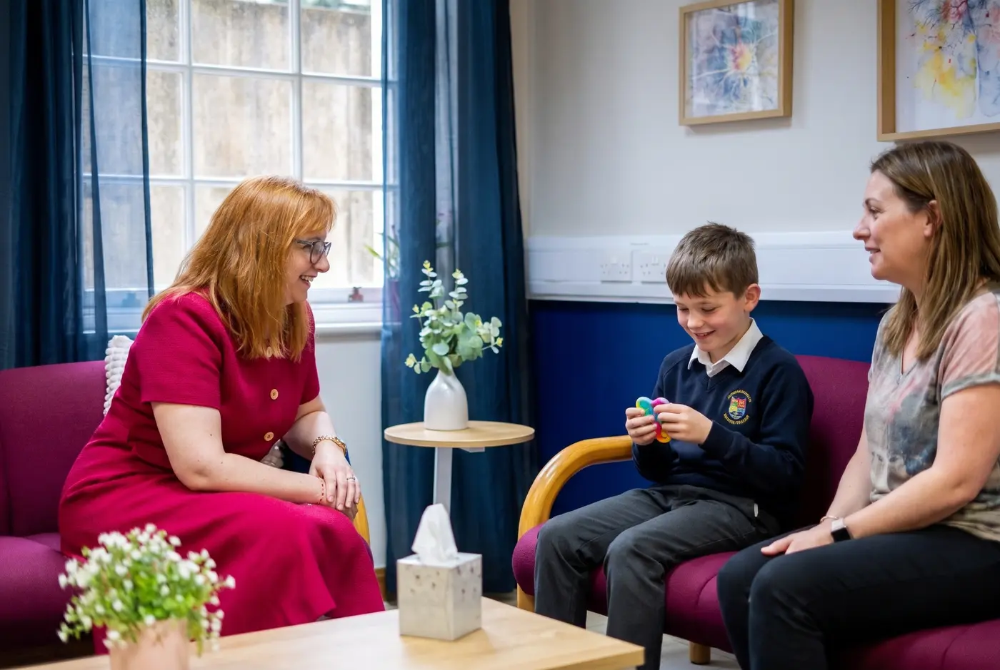
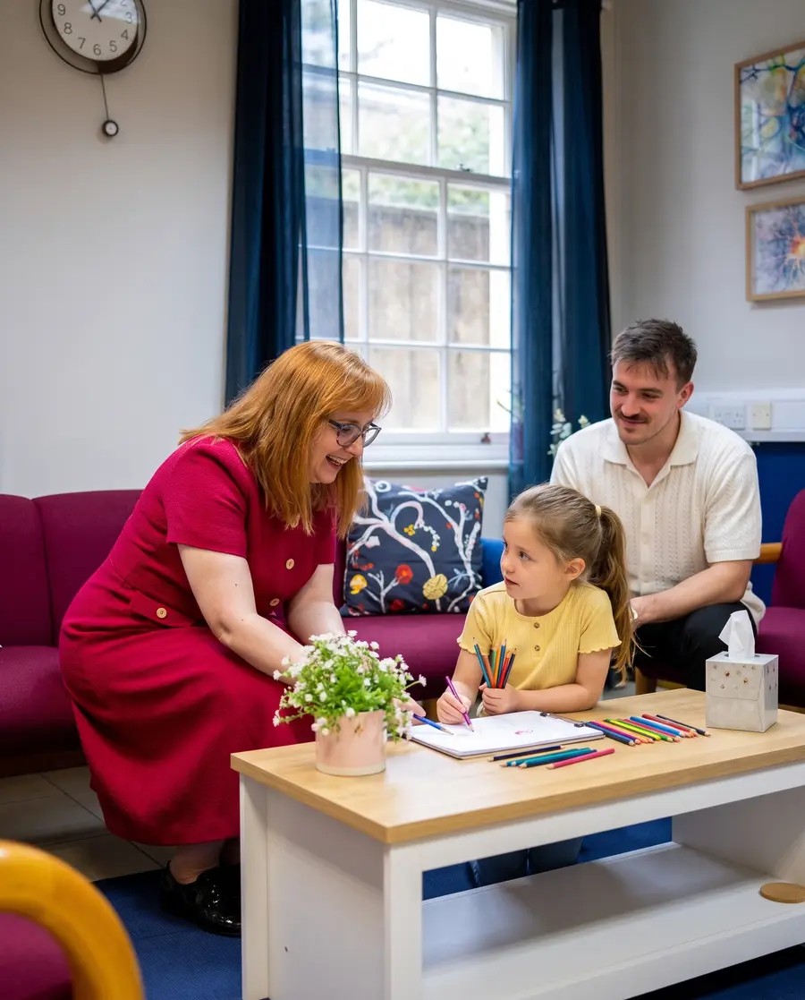
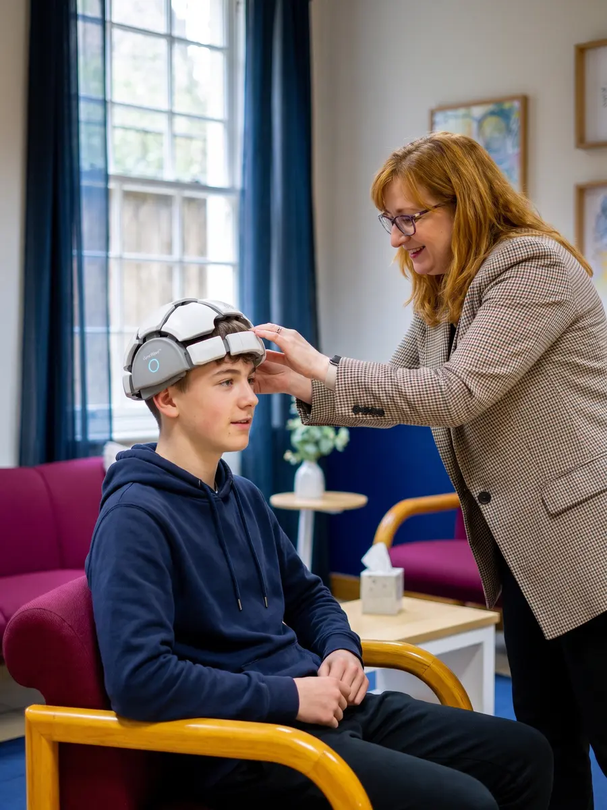
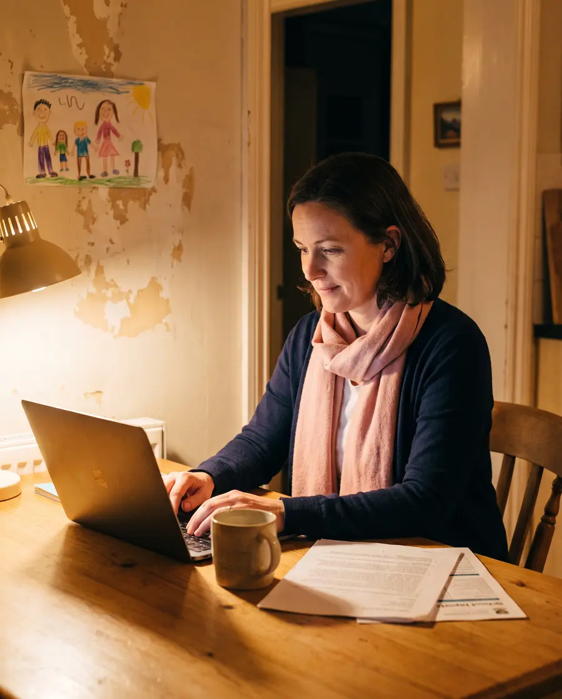
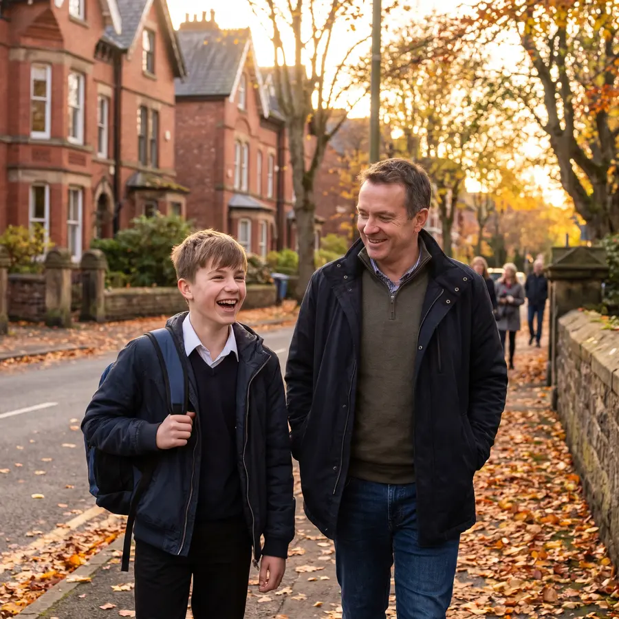
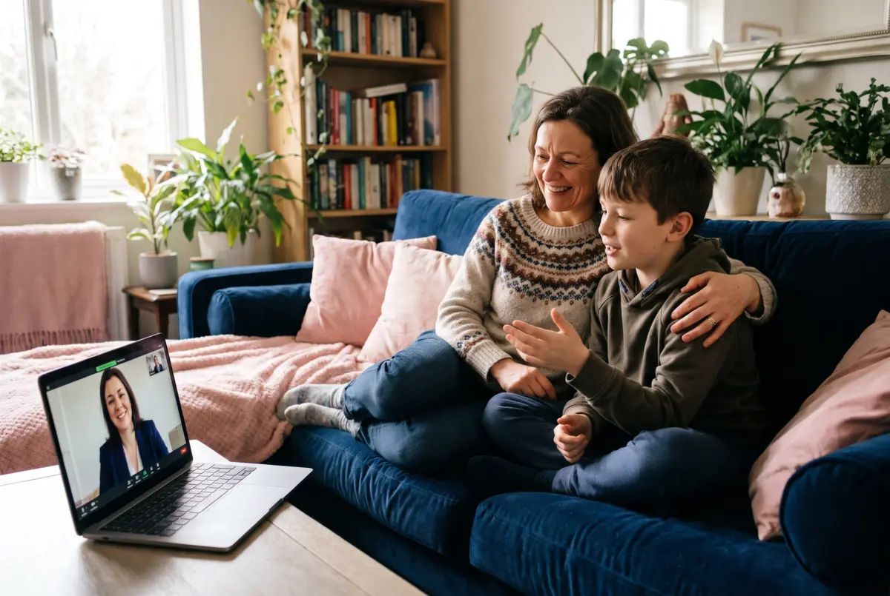

Outstanding service and a really positive experience. I visited Refocus The Brain Hub with my son regarding ADHD, and I honestly couldn't have been happier with the service we received. From the moment we arrived, we were made to feel welcome, listened to and supported. The team were professional, caring and understanding, and I really appreciated the time and attention they gave us. As a new business, they have made a fantastic impression, and it's clear that they genuinely care about the people they support. I'm more than happy to give Refocus The Brain Hub five stars and would definitely recommend them to anyone looking for a professional, supportive and caring service. Wishing them every success for the future!
Private ADHD assessment for children and teenagers
A consultant child psychiatrist-led assessment in Manchester or online, with a clear report you can share with school and your GP.
- Led by consultant child and adolescent psychiatrists
- NICE-aligned Young DIVA-5 interview
- Parent and school questionnaires included
- Report for school, SENCO and your GP
- From £750 until 30 November

What families and patients say
Feeling understood, at last
Following some research we chose Refocus for a combined ASD and ADHD assessment for our daughter. We chose Refocus as the assessment would be in person and they could liaise with school to allow them to inform the process. We found the environment calming, the consultants and clinicians expert in their field and the follow up meeting and report clear. We wouldn't hesitate in recommending.
I didn't expect to gain this level of clarity about myself. At Refocus Hub, I finally felt understood rather than judged. The way they explain how the brain works is both scientific and easy to follow. If you struggle with anxiety, overthinking, or ADHD, this is genuinely one of the most helpful services you can access in the UK.
I had a really positive experience with Refocus Hub. I initially reached out for support around focus and possible ADHD, but what I got was a much deeper understanding of how my brain actually works. The BrainMap assessment was particularly helpful, not overwhelming, just clear and well explained. It connected a lot of things for me, especially around stress and emotional responses. I would definitely recommend this service to anyone in the UK looking for a more in-depth psychological approach.
Refocus Hub offers a highly professional ADHD assessment service in the UK. The process was well-organized, and the feedback I received was detailed, practical, and tailored to my specific cognitive and emotional patterns. This is not a generic approach, it's personalised and evidence-based. Highly recommended.
I had a very positive experience with Refocus Hub. The assessment process was clear, structured, and grounded in real psychological understanding rather than quick labels. What stood out most was the focus on underlying mechanisms, not just symptoms. I would highly recommend Refocus Hub to anyone in the UK looking for professional psychological support, especially for ADHD and emotional regulation.
The team is amazing really kind friendly place o struggled a bit with my anxiety but I felt very comfortable they are the first people in my whole life too diagnose me with adhd. Would reccomend too anyone. Thank you


“Why is school so hard for him?”
Child and teen ADHD assessment
Answers for your child, and for you
Is school calling again? Do mornings end in tears and homework in battles, leaving you wondering what you are doing wrong? You are not, and we understand how exhausting this feels. Our consultant child psychiatrists look at your child's whole story, at home and at school, using gold-standard tools. You leave with clear answers, a plan school can act on and a calmer way forward.
Book a free 15-min consultation
ADHD looks different in every child
Does this sound like your child?
Some children are visibly hyperactive. Others, especially girls, hold it together at school and fall apart at home. Tap anything you recognise.
Nothing selected yet.
This is not a test or a diagnosis. These signs also overlap with autism, anxiety, sleep problems, learning differences and sensory needs, which is exactly why a specialist assessment matters.


Dr Miriana VrajitoriuFounder and Medical Director
“A questionnaire can't see your child's brain. We take the time to understand the whole child.”
Why Refocus
Consultant-led. Clinically robust.
Every child and teen ADHD assessment at Refocus is led by a consultant child and adolescent psychiatrist, not a junior clinician working from a script.
Senior NHS CAMHS experience
Our clinicians have led NHS child and adolescent services, including Neurodevelopmental Pathway Medical Lead and Trust Safeguarding Doctor roles.
NICE-aligned and quality assured
Assessments follow NICE guidance and the ADHD Assessment Quality Assurance Standard for Children and Teenagers (CAAQAS), using the Young DIVA-5 interview.
The whole picture
We screen for autism, anxiety, low mood, learning differences and sensory needs, so overlapping conditions are not missed.
Reports school can use
A clear written report you can share with school, your child's SENCO and your GP, including guidance on NHS shared care.
Our approach to ADHD in children and young people
Understand. Map. Personalise. Refocus.
A diagnosis can give your family answers. At Refocus, it is never the end of the conversation.
-

Step 1: Understand
Start with the whole child
We listen to your child's story, their development, strengths and what feels hard at home and at school before deciding what it means. ADHD in children often overlaps with autism, anxiety, learning differences, sleep and sensory needs, so our assessment is built to tell apart presentations that look similar on the surface but aren't.
-

Step 2: Map
See another layer of the picture
Where clinically appropriate, we add qEEG brain mapping, a non-invasive recording of the brain's electrical activity. It never replaces clinical assessment and is not used to diagnose ADHD on its own, but in complex cases it adds objective information about attention and regulation alongside the clinical picture.
Sometimes the first step isn't another label. It's a clearer picture.
-

Step 3: Personalise
Use what we learn to guide what comes next
Two children can share an ADHD diagnosis and experience it completely differently, so recommendations should reflect your child. A plan may include support and adjustments at school, parenting strategies, psychoeducation for the whole family, medication support where appropriate, or brain training such as neurofeedback.
The right pathway is the one that makes sense for your child.
-
Step 4: Refocus
Move forward with clarity
Our goal isn't simply a diagnosis. It's helping you understand your child's brain well enough to make better decisions at home, at school and through every stage of growing up.



Secure online forms, completed at home
What happens in your assessment
A thorough assessment, step by step
ADHD rarely exists in isolation. That is why we look at home, school and development, not just screening forms.
We get to know your child first
Once your deposit is paid, your family gets access to our secure patient portal. Your consultant reviews everything before you meet, so your appointment is focused and meaningful.
Parent questionnairesYour view of your child at home
School questionnairesCompleted by a teacher or SENCO
Child or teen formsAge-appropriate, in their own words
Developmental screeningEarly milestones and mental health
Time with a senior consultant
You and your child meet a consultant experienced in ADHD and neurodevelopmental conditions, in our Manchester clinic or by secure video. The appointment includes the Young DIVA-5 interview, which explores how symptoms show up at home, at school and with friends.
- Early development and milestones
- School and learning experiences
- Emotional wellbeing and relationships
- Strengths, interests and coping strategies
- Overlapping conditions such as autism or anxiety
Where possible, your consultant shares their clinical impression with you on the day.
A report school can act on
You receive a comprehensive written report and the chance to talk through the outcome and ask questions.
- Diagnostic outcome, where criteria are met
- Other explanations your consultant considered
- Recommendations for support and adjustments at school
- Strategies for home and family life
- Medication guidance, including NHS shared care options

Teen ADHD assessment£750£890Online, until 30 November
ADHD in teenagers
Exams, friendships and growing independence
The teenage years can bring ADHD into sharper focus, as schoolwork gets harder and young people are expected to organise more for themselves.
Waiting lists can mean missing a whole exam year. An assessment now can help before GCSEs, A-levels or university.
Our consultants are used to working with teenagers, including those who feel reluctant or embarrassed about being assessed, and many young people prefer the online option. Your report can support conversations with school about exam access arrangements, and we can help plan the move to adult services at 18.
Ask about teen assessments
Filmed at our Manchester clinic
A real qEEG brain mapping session
Optional add-on
See another layer with qEEG brain mapping
qEEG is a painless recording of the brain's electrical activity. It is never used on its own to diagnose ADHD, but in complex cases, or when questionnaires give mixed signals, it adds useful insight into attention, regulation and processing.
- A lightweight sensor headset is fitted while your child sits comfortably
- Brain activity is recorded and turned into colour maps
- Your clinician explains what the maps show and how they fit the assessment
£200added to your assessment
usually £350
Ask if it's right for you
Clear, all-inclusive pricing
Choose how you would like to be assessed
The same consultant-led assessment and written report, whether your family visits our Manchester clinic or joins us online.

Online, anywhere in the UKVirtual ADHD assessment
£750£890Save £140
- Consultant-led assessment by secure video, from home
- Parent, school and child questionnaires
- Comprehensive written report for school and your GP
- No time off school for travel
6 Oxford Place, Manchester
Face-to-face ADHD assessment
£850£1,150Save £300
- In person at our calm, child-friendly Manchester clinic
- Parent, school and child questionnaires
- Comprehensive written report for school and your GP
- Easy to reach from across Greater Manchester and the North West
Combined ADHD and autism assessment£1,700 £1,900
Both assessed together, online. £2,000 face to face (usually £2,200).
qEEG brain mapping£200 £350
When booked alongside your assessment and clinically appropriate.
£250 deposit to book
Your deposit secures your appointment and unlocks the patient portal. The balance is paid before your assessment.
From first call to clear answers
Five simple steps, with our team guiding you at every stage.
- 1
Free 15-minute call
Tell us what's going on and ask anything. No pressure.
- 2
Pay your deposit
A £250 deposit secures your place and opens your portal.
- 3
Complete online forms
Parent, school and child questionnaires, done at home.
- 4
Matched to a consultant
We review your information and book the right clinician.
- 5
The assessment
Meet your consultant, then receive your written report.
Meet the minds behind Refocus
Your child and teen ADHD specialists
Consultant child and adolescent psychiatrists, psychologists and advanced practitioners with extensive NHS CAMHS and private experience.
Dr Miriana Vrajitoriu
Consultant Child and Adolescent Psychiatrist, Founder and Medical Director
GMC Specialist Register, MRCPsych, ADOS-2, ADI-R. Former NHS Neurodevelopmental Pathway Medical Lead.

Dr Arif Qadir
Consultant Child and Adolescent Psychiatrist, Safeguarding Lead
Over 12 years in NHS and independent CAMHS. ADI-R and DISCO-3 trained.

Dr Suzana Alexandra Corciova
Consultant Child and Adolescent Psychiatrist
GMC Specialist Register, MRCPsych, CCT, ADI-R. Speaks English, Italian and Romanian.

Dr Helen Walsh
Consultant Clinical Psychologist, Clinical Lead
ADOS trained. Over 30 years working with children, young people and families in the NHS.

Claire McGuinness
Advanced Nurse Practitioner, ADHD Medication Pathway Lead
ADHD Clinical Lead within CAMHS. NMC registered Independent Prescriber.

Denisa Anamaria Scripcariu
Clinical Psychologist, Brain Mapping Specialist
Applied neuroscience and qEEG brain mapping.

A message from our founder
“There are 8 billion brains in the world. Your care should begin with understanding yours.”
I spent over two decades in child and adolescent psychiatry, including years leading NHS neurodevelopmental services. I helped develop ADHD and autism pathways and supported families searching for answers.
Refocus is the service I wanted to exist: rigorous enough for complex cases, curious enough to look beyond the obvious, and human enough never to forget the child behind the data.
Dr Miriana VrajitoriuFounder and Medical Director, GMC 7211553
After your assessment
Clarity changes what happens next
- Understand your child's brain, strengths and needs
- Replace blame with understanding, at home and at school
- Give school a report they can use to put support in place
- Know your options, including treatment and NHS shared care
Questions, answered
Child and teen ADHD assessment FAQs
Can't see your question? Our team is happy to help.
No. You can book directly with us, starting with a free 15-minute consultation. You do not need a referral from your GP or school.
Until 30 November 2026, a virtual assessment costs £750 (usually £890) and a face-to-face assessment in Manchester costs £850 (usually £1,150). The price includes the parent, school and child questionnaires, the consultant assessment and your written report. A £250 deposit secures your appointment.
Start with a free 15-minute call. After paying your deposit, you, your child's school and your child (where age-appropriate) complete questionnaires online. You and your child then meet a consultant for the assessment, including the Young DIVA-5 interview, and receive a written report with the outcome and recommendations.
Your report is written to be shared with school, your child's SENCO and your GP, and follows NICE guidance. It sets out your child's needs and practical recommendations that school can use when planning support.
Yes. We offer assessments within weeks rather than the years many families wait. Your report can support conversations with school about exam access arrangements, although the final decision rests with the school and exam boards.
Yes. Your child takes part alongside you, either at our Manchester clinic or by secure video from home. Our consultants adapt the appointment to your child's age and needs.
Yes. Our combined ADHD and autism assessment looks at both in one joined-up process, from £1,700 online until 30 November 2026.
You still leave with a clear explanation of what may be going on, such as anxiety, autism traits, learning differences or sleep problems, plus practical recommendations for home and school.
If medication is recommended, your report includes guidance on NHS shared care. Whether a GP agrees to shared care varies between practices, and we will be open with you about your local options.
Our clinic is at 6 Oxford Place, Manchester M14 5RZ. Families travel to us from across Greater Manchester, Liverpool, Cheshire, Stockport, Wigan, Lancashire and Yorkshire. Online assessments are available across the UK.
Our clinicians are registered with and recognised by


Not ready to book yet?
Ask us anything
Send us your question about your child and a member of our team will get back to you. Confidential, supportive and no pressure.
Book a free 15-min consultationSend us an enquiry
We'll reply as soon as we can.